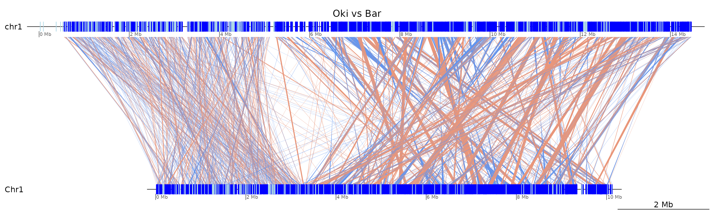
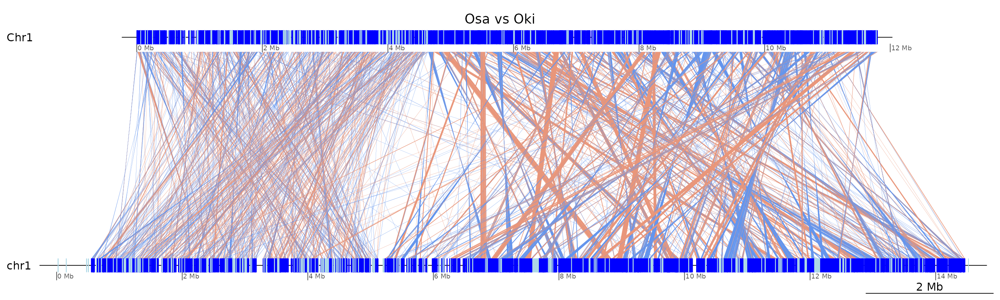
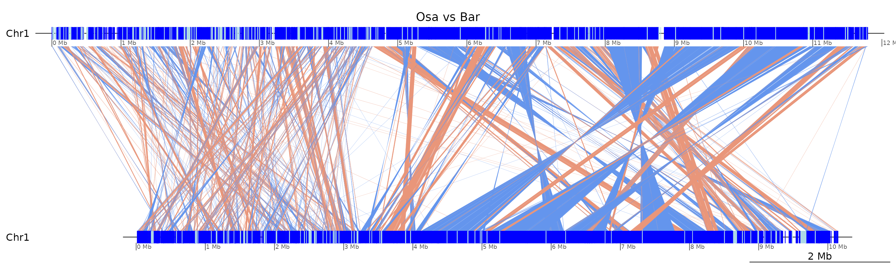
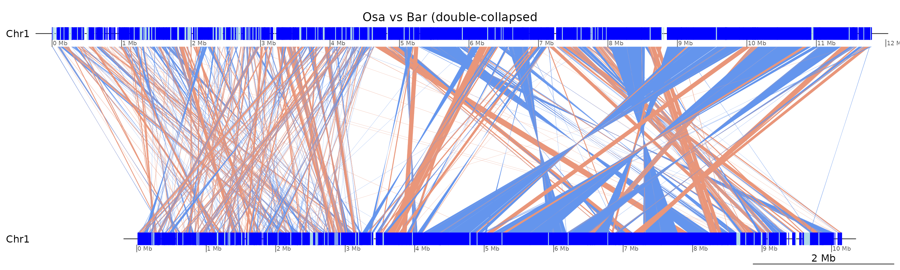

Whole-chromosome parallel plots
Charles Plessy
06 November, 2023
Source:vignettes/ParallelPlots.Rmd
ParallelPlots.Rmd
knitr::opts_chunk$set(cache = TRUE, cache.lazy = FALSE)
knitr::opts_knit$set(verbose = TRUE)Introduction
Pairwise alignments between whole chromosomes are plotted in parallel in order to reflect synteny and the difference of scrambling between short and long arms.
Figure 1 panel B was generated in this vignette.
Load R pacakges and data
Load pacakges
library('OikScrambling') |> suppressPackageStartupMessages()
genomes <- OikScrambling:::loadAllGenomes()## Warning in runHook(".onLoad", env, package.lib, package): input string
## 'Génoscope' cannot be translated from 'ANSI_X3.4-1968' to UTF-8, but is valid
## UTF-8
## Warning in runHook(".onLoad", env, package.lib, package): input string
## 'Génoscope' cannot be translated from 'ANSI_X3.4-1968' to UTF-8, but is valid
## UTF-8
load("BreakPoints.Rdata")Phylogenetic cladogram
We assume that the North Pacific and the Atlantic species are more related to each other than to the Okinawan species.
requireNamespace("ade4")
treeLeaf <- function(name, length=NULL) {
if(!is.null(length)) length <- paste0(':', length)
paste0(name, length)
}
treeNode <- function(branch1, branch2, length = NULL) {
if(!is.null(length)) length <- paste0(':', length)
paste0('(', branch1, ',', branch2, ')', length)
}
addRoot <- function(branch) paste0(branch, ";")
tree <-
addRoot(
treeNode(
treeNode( length = 2,
treeLeaf("Okinawa", 1),
treeLeaf("Kume", 1)
),
treeNode( length = 1,
treeNode( length = 1,
treeLeaf("Osaka", 1),
treeLeaf("Aomori", 1)
),
treeNode( length =1,
treeLeaf("Norway", 1),
treeLeaf("Barcelona", 1)
)
)
)
)
plot(ade4::newick2phylog(tree))
Plot chr2 in six species
We chose chromosome 2 because it has Hox4.
Parallel plot
KumChr2 <- scaffoldByFlipAndMerge(gbs$Oki_Kum |> swap(), scafs$Kum_Oki, drop = TRUE) |> swap() |> coalesce_contigs()
Aom_Osa <- scaffoldByFlipAndMerge(gbs$Osa_Aom |> swap(), scafs$Aom_Osa, drop = TRUE) |> swap() |> coalesce_contigs()
Aom_Oki <- scaffoldByFlipAndMerge(gbs$Oki_Aom |> swap(), scafs$Aom_Osa, drop = TRUE) |> swap() |> coalesce_contigs()
Bar_Nor <- gbs$Bar_Nor |> swap() |>
splitSeqLevel("scaffold_3", 700924) |>
splitSeqLevel("scaffold_8", 1110680) |>
scaffoldByFlipAndMerge(scafs$Nor_Bar) |>
coalesce_contigs() |> swap(sort = TRUE)
dsList6 <- list(
Kume = KumChr2 |> swap() |> plyranges::filter(seqnames == 'Chr2', seqnames(query) == 'chr2') |> gr2dna_seg(),
Okinawa = c(
KumChr2 |> plyranges::filter(seqnames == 'chr2', seqnames(query) == 'Chr2') |> granges(),
Aom_Oki |> plyranges::filter(seqnames == 'Chr2', seqnames(query) == 'chr2') |> granges()
) |> reduce() |> gr2dna_seg(),
Aomori = c(
Aom_Oki |> swap() |> plyranges::filter(seqnames == 'Chr2', seqnames(query) == 'chr2') |> granges(),
Aom_Osa |> swap() |> plyranges::filter(seqnames == 'Chr2', seqnames(query) == 'Chr2') |> granges()
) |> reduce() |> gr2dna_seg(),
Osaka = c(
Aom_Osa |> plyranges::filter(seqnames == 'Chr2', seqnames(query) == 'Chr2') |> granges(),
coa$Osa_Bar |> plyranges::filter(seqnames == 'Chr2', seqnames(query) == 'Chr2') |> granges()
) |> reduce() |> gr2dna_seg(),
Barcelona = c(
coa$Bar_Osa |> plyranges::filter(seqnames == 'Chr2', seqnames(query) == 'Chr2') |> granges(),
Bar_Nor |> plyranges::filter(seqnames == 'Chr2', seqnames(query) == 'Chr2') |> granges()
) |> reduce() |> gr2dna_seg(),
Bergen = Bar_Nor |> swap() |> plyranges::filter(seqnames == 'Chr2', seqnames(query) == 'Chr2') |> gr2dna_seg()
)
compList6 <- list(
Oki_Kum = KumChr2 |> swap() |> plyranges::filter(seqnames == 'Chr2', seqnames(query) == 'chr2') |> gb2comp(),
Aom_Oki = Aom_Oki |> plyranges::filter(seqnames == 'chr2', seqnames(query) == 'Chr2') |> gb2comp(),
Osa_Aom = Aom_Osa |> swap() |> plyranges::filter(seqnames == 'Chr2', seqnames(query) == 'Chr2') |> gb2comp(),
Osa_Bar = coa$Osa_Bar |> plyranges::filter(seqnames == 'Chr2', seqnames(query) == 'Chr2') |> gb2comp(),
Bar_Nor = Bar_Nor |> plyranges::filter(seqnames == 'Chr2', seqnames(query) == 'Chr2') |> gb2comp()
)
dsList6$Kume$col <- dsList6$Kume$fill <- dsList6$Okinawa$col <- dsList6$Okinawa$fill <-
dsList6$Aomori$col <- dsList6$Aomori$fill <-
dsList6$Osaka$col <- dsList6$Osaka$fill <- dsList6$Barcelona$col <- dsList6$Barcelona$fill <-
dsList6$Bergen$col <- dsList6$Bergen$fill <- "#A6D854"
compList6$Oki_Kum$color <- compList6$Aom_Oki$color <- compList6$Osa_Aom$color <-
compList6$Osa_Bar$color <- compList6$Bar_Nor$color <- "#D4EACC"
compList6$Oki_Kum$col <- ifelse(compList6$Oki_Kum$col == "darksalmon", "#D4EACC", "#00A08E")
compList6$Aom_Oki$col <- ifelse(compList6$Aom_Oki$col == "darksalmon", "#D4EACC", "#00A08E")
compList6$Osa_Aom$col <- ifelse(compList6$Osa_Aom$col == "darksalmon", "#D4EACC", "#00A08E")
compList6$Osa_Bar$col <- ifelse(compList6$Osa_Bar$col == "darksalmon", "#D4EACC", "#00A08E")
compList6$Bar_Nor$col <- ifelse(compList6$Bar_Nor$col == "darksalmon", "#D4EACC", "#00A08E")
genoPlotR::plot_gene_map(dsList6, compList6, dna_seg_scale = FALSE,
tree = ade4::newick2phylog("((Kume:1,Okinawa:1):2,((Aomori:1,Osaka:1):1,(Barcelona:1,Bergen:1):1):1);"),
main = "Chromosome 2 in six Oikopleura genome assemblies")
Plot chr2 in four species
We chose chromosome 2 because it has Hox4.
Parallel plot
dsList4 <- list(
KUM = KumChr2 |> swap() |> plyranges::filter(seqnames == 'Chr2', seqnames(query) == 'chr2') |> gr2dna_seg(),
OKI = KumChr2 |> plyranges::filter(seqnames == 'chr2', seqnames(query) == 'Chr2') |> gr2dna_seg(),
OSA = coa$Osa_Bar |> plyranges::filter(seqnames == 'Chr2', seqnames(query) == 'Chr2') |> gr2dna_seg(),
BAR = coa$Bar_Osa |> plyranges::filter(seqnames == 'Chr2', seqnames(query) == 'Chr2') |> gr2dna_seg()
)
compList4 <- list(
Oki_Kum = KumChr2 |> swap() |> plyranges::filter(seqnames == 'Chr2', seqnames(query) == 'chr2') |> gb2comp(),
Oki_Osa = coa$Oki_Osa |> plyranges::filter(seqnames == 'chr2', seqnames(query) == 'Chr2') |> gb2comp(),
Osa_Bar = coa$Osa_Bar |> plyranges::filter(seqnames == 'Chr2', seqnames(query) == 'Chr2') |> gb2comp()
)
dsList4$KUM$col <- dsList4$KUM$fill <- dsList4$OKI$col <- dsList4$OKI$fill <-
dsList4$OSA$col <- dsList4$OSA$fill <- dsList4$BAR$col <- dsList4$BAR$fill <-
"#A6D854"
compList4$Oki_Kum$color <- compList4$Oki_Osa$color <- compList4$Osa_Bar$color <- "#D4EACC"
compList4$Oki_Kum$col <- ifelse(compList4$Oki_Kum$col == "darksalmon", "#D4EACC", "#00A08E")
compList4$Osa_Bar$col <- ifelse(compList4$Osa_Bar$col == "darksalmon", "#D4EACC", "#00A08E")
compList4$Oki_Osa$col <- ifelse(compList4$Oki_Osa$col == "darksalmon", "#D4EACC", "#00A08E")
genoPlotR::plot_gene_map(dsList4, compList4, dna_seg_scale = FALSE,
tree = ade4::newick2phylog(addRoot(treeNode(treeNode("OKI", "KUM"), treeNode("OSA", "BAR")))),
main = "Chromosome 2 in four Oikopleura genome assemblies")
Plot chr2 in five species
We chose chromosome 2 because it has Hox4.
Parallel plot
Aom_Osa <- scaffoldByFlipAndMerge(gbs$Osa_Aom |> swap(), scafs$Aom_Osa, drop = TRUE) |> swap() |> coalesce_contigs()
Aom_Oki <- scaffoldByFlipAndMerge(gbs$Oki_Aom |> swap(), scafs$Aom_Osa, drop = TRUE) |> swap() |> coalesce_contigs()
dsList5 <- list(
KUM = KumChr2 |> swap() |> plyranges::filter(seqnames == 'Chr2', seqnames(query) == 'chr2') |> gr2dna_seg(),
OKI = KumChr2 |> plyranges::filter(seqnames == 'chr2', seqnames(query) == 'Chr2') |> gr2dna_seg(),
AOM = Aom_Osa |> swap() |> plyranges::filter(seqnames == 'Chr2', seqnames(query) == 'Chr2') |> gr2dna_seg(),
OSA = coa$Osa_Bar |> plyranges::filter(seqnames == 'Chr2', seqnames(query) == 'Chr2') |> gr2dna_seg(),
BAR = coa$Bar_Osa |> plyranges::filter(seqnames == 'Chr2', seqnames(query) == 'Chr2') |> gr2dna_seg()
)
compList5 <- list(
Oki_Kum = KumChr2 |> swap() |> plyranges::filter(seqnames == 'Chr2', seqnames(query) == 'chr2') |> gb2comp(),
Aom_Oki = Aom_Oki |> swap() |> plyranges::filter(seqnames == 'Chr2', seqnames(query) == 'chr2') |> gb2comp(),
Osa_Aom = Aom_Osa |> plyranges::filter(seqnames == 'Chr2', seqnames(query) == 'Chr2') |> gb2comp(),
Osa_Bar = coa$Osa_Bar |> plyranges::filter(seqnames == 'Chr2', seqnames(query) == 'Chr2') |> gb2comp()
)
dsList5$KUM$col <- dsList5$KUM$fill <- dsList5$OKI$col <- dsList5$OKI$fill <-
dsList5$AOM$col <- dsList5$AOM$fill <-
dsList5$OSA$col <- dsList5$OSA$fill <- dsList5$BAR$col <- dsList5$BAR$fill <-
"#A6D854"
compList5$Oki_Kum$color <- compList5$Aom_Oki$color <- compList5$Osa_Aom$color <- compList5$Osa_Bar$color <- "#D4EACC"
compList5$Oki_Kum$col <- ifelse(compList5$Oki_Kum$col == "darksalmon", "#D4EACC", "#00A08E")
compList5$Aom_Oki$col <- ifelse(compList5$Aom_Oki$col == "darksalmon", "#D4EACC", "#00A08E")
compList5$Osa_Aom$col <- ifelse(compList5$Osa_Aom$col == "darksalmon", "#D4EACC", "#00A08E")
compList5$Osa_Bar$col <- ifelse(compList5$Osa_Bar$col == "darksalmon", "#D4EACC", "#00A08E")
genoPlotR::plot_gene_map(dsList5, compList5, dna_seg_scale = FALSE,
tree = ade4::newick2phylog(addRoot(treeNode(treeNode("OKI", "KUM"), treeNode(treeNode("OSA", "AOM"), "BAR")))),
main = "Chromosome 2 in five Oikopleura genome assemblies")
Strand randomisation indexes
These numbers were added to the plot in Figure 1B.
chr2Long <- \(gb) plyranges::filter(gb, seqnames %in% c("chr2", "Chr2"), seqnames(query) %in% c("chr2", "Chr2"), Arm == "long", query$Arm == "long")
chr2short <- \(gb) plyranges::filter(gb, seqnames %in% c("chr2", "Chr2"), seqnames(query) %in% c("chr2", "Chr2"), Arm == "short", query$Arm == "short")
chr2both <- \(gb) plyranges::filter(gb, seqnames %in% c("chr2", "Chr2"), seqnames(query) %in% c("chr2", "Chr2"))
KumChr2 <- GenomicBreaks::flagLongShort(KumChr2, longShort$OKI2018.I69)
KumChr2$query$Arm <- Rle("long")
KumChr2$query$Arm[
end(KumChr2$query) <= (cumsum(seqlengths(coa$Oki_Kum$query)[scafs$Kum_Oki$Chr2$contig]) -1) ["contig_16_1"] &
seqnames(KumChr2) == "chr2" &
seqnames(KumChr2$query) == "Chr2"
] <- "short"
Aom_Osa <- GenomicBreaks::flagLongShort(Aom_Osa, longShort$OSKA2016v1.9)
Aom_Osa$query <- GenomicBreaks::flagLongShort(
Aom_Osa$query,
GRanges(c("Chr2:1-5523357", "Chr2:5523357-12906126"), Type = c("short", "long")))
Aom_Oki <- GenomicBreaks::flagLongShort(Aom_Oki, longShort$OKI2018.I69)
Aom_Oki$query <- GenomicBreaks::flagLongShort(
Aom_Oki$query,
GRanges(c("Chr2:1-5523357", "Chr2:5523357-12906126"), Type = c("short", "long")))
Bar_Nor <- GenomicBreaks::flagLongShort(Bar_Nor, longShort$Bar2.p4)
Bar_Nor$query <- GenomicBreaks::flagLongShort(
Bar_Nor$query,
GRanges(c("Chr2:1-4525974", "Chr2:4525975-12906790"), Type = c("short", "long")))
SRI_Both_Strands <- \(gb) mean(c(strand_randomisation_index(gb)
,strand_randomisation_index(swap(gb))))
(SRIs <- c(
Kum_Chr2_long = KumChr2 |> chr2Long() |> SRI_Both_Strands(),
Kum_Chr2_short = KumChr2 |> chr2short() |> SRI_Both_Strands(),
Kum_Chr2_both = KumChr2 |> chr2both() |> SRI_Both_Strands(),
Oki_Aom_long = Aom_Oki |> chr2Long() |> SRI_Both_Strands(),
Oki_Aom_short = Aom_Oki |> chr2short() |> SRI_Both_Strands(),
Oki_Aom_both = Aom_Oki |> chr2both() |> SRI_Both_Strands(),
Osa_Aom_long = Aom_Osa |> chr2Long() |> SRI_Both_Strands(),
Osa_Aom_short = Aom_Osa |> chr2short() |> SRI_Both_Strands(),
Osa_Aom_both = Aom_Osa |> chr2both() |> SRI_Both_Strands(),
Oki_Osa_long = coa$Oki_Osa |> chr2Long() |> SRI_Both_Strands(),
Osa_Oki_long = coa$Osa_Oki |> chr2Long() |> SRI_Both_Strands(),
Oki_Osa_short = coa$Oki_Osa |> chr2short() |> SRI_Both_Strands(),
Osa_Oki_short = coa$Osa_Oki |> chr2short() |> SRI_Both_Strands(),
Oki_Osa_both = coa$Oki_Osa |> chr2both() |> SRI_Both_Strands(),
Osa_Oki_both = coa$Osa_Oki |> chr2both() |> SRI_Both_Strands(),
Osa_Bar_long = coa$Osa_Bar |> chr2Long() |> SRI_Both_Strands(),
Bar_Osa_long = coa$Bar_Osa |> chr2Long() |> SRI_Both_Strands(),
Osa_Bar_short = coa$Osa_Bar |> chr2short() |> SRI_Both_Strands(),
Bar_Osa_short = coa$Bar_Osa |> chr2short() |> SRI_Both_Strands(),
Osa_Bar_both = coa$Osa_Bar |> chr2both() |> SRI_Both_Strands(),
Bar_Osa_both = coa$Bar_Osa |> chr2both() |> SRI_Both_Strands(),
Bar_Nor_short = Bar_Nor |> chr2short() |> SRI_Both_Strands(),
Bar_Nor_long = Bar_Nor |> chr2Long() |> SRI_Both_Strands()
))## Kum_Chr2_long Kum_Chr2_short Kum_Chr2_both Oki_Aom_long Oki_Aom_short
## 0.832774687 0.762407551 0.807347070 0.007713088 0.014947894
## Oki_Aom_both Osa_Aom_long Osa_Aom_short Osa_Aom_both Oki_Osa_long
## 0.020490460 0.762052760 0.169998327 0.509978155 0.013253234
## Osa_Oki_long Oki_Osa_short Osa_Oki_short Oki_Osa_both Osa_Oki_both
## 0.017958605 0.020211761 0.019965884 0.016624847 0.014163168
## Osa_Bar_long Bar_Osa_long Osa_Bar_short Bar_Osa_short Osa_Bar_both
## 0.158432788 0.159058114 0.018673220 0.016156226 0.108829940
## Bar_Osa_both Bar_Nor_short Bar_Nor_long
## 0.105527771 0.980679790 0.967169963
roundMean <- \(x) round(mean(SRIs[x]), 2)
data.frame(
short = c(
Kum_Oki = roundMean(c("Kum_Chr2_short")),
Oki_Aom = roundMean(c("Oki_Aom_short")),
Aom_Osa = roundMean(c("Osa_Aom_short")),
Osa_Bar = roundMean(c("Osa_Bar_short", "Bar_Osa_short")),
Bar_Nor = roundMean(c("Bar_Nor_short"))
),
long = c(
Kum_Oki = roundMean(c("Kum_Chr2_long")),
Oki_Aom = roundMean(c("Oki_Aom_long")),
Aom_Osa = roundMean(c("Osa_Aom_long")),
Osa_Bar = roundMean(c("Osa_Bar_long", "Bar_Osa_long")),
Bar_Nor = roundMean(c("Bar_Nor_long"))
)
)## short long
## Kum_Oki 0.76 0.83
## Oki_Aom 0.01 0.01
## Aom_Osa 0.17 0.76
## Osa_Bar 0.02 0.16
## Bar_Nor 0.98 0.97Plot pairs of chromosome 1s.
plotApairOfChrs(coa$Oki_Bar, "chr1", main = "Oki vs Bar")
plotApairOfChrs(coa$Oki_Osa, "chr1", main = "Oki vs Osa")
plotApairOfChrs(coa$Osa_Oki, "Chr1", main = "Osa vs Oki")
plotApairOfChrs(coa$Osa_Bar, "Chr1", main = "Osa vs Bar")
plotApairOfChrs(coa2$Osa_Bar, "Chr1", main = "Osa vs Bar (double-collapsed")
Scrambling of a 1-megabase region.
x <- subsetByOverlaps(coa2$Oki_Osa, granges(coa2$Oki_Bar)) |> subset(width > 1e5)
y <- subsetByOverlaps(coa2$Oki_Bar, granges(coa2$Oki_Osa)) |> subset(width > 1e5)
findOverlapPairs(x,y)## Pairs object with 4 pairs and 0 metadata columns:
## first second
## <GBreaks> <GBreaks>
## [1] chr2:10664980-10829335:+ chr2:10664980-10828981:+
## [2] chr2:13895789-14003399:- chr2:13895789-14003408:-
## [3] PAR:15193293-15358116:- PAR:15193294-15358116:-
## [4] XSR:10090052-10210973:- XSR:10090052-10210972:-## GBreaks object with 16 ranges and 6 metadata columns:
## seqnames ranges strand | query Arm
## <Rle> <IRanges> <Rle> | <GRanges> <factor>
## [1] chr2 5825747-5966560 + | Chr2:5465216-5578318 long
## [2] chr2 10361302-10481638 + | Chr2:11648925-11718071 long
## [3] chr2 10664980-10829335 + | Chr2:5679693-5828385 long
## [4] chr2 13895789-14003399 - | Chr2:11294781-11373503 long
## [5] chr2 14726918-14844516 + | Chr2:8440297-8537610 long
## ... ... ... ... . ... ...
## [12] XSR 7236669-7346658 + | XSR:4093395-4195157 XSR
## [13] XSR 7543498-7653200 + | XSR:3606737-3707501 XSR
## [14] XSR 8709632-8820503 + | XSR:7297396-7413239 XSR
## [15] XSR 8929901-9075791 - | XSR:7506741-7641724 XSR
## [16] XSR 10090052-10210973 - | XSR:10484001-10612402 XSR
## rep repOvlp transcripts
## <CharacterList> <integer> <Rle>
## [1] tandem,unknown,rnd,... 5240 g5554.t1;g5556.t1;g5..
## [2] tandem,unknown,rnd,... 11135 g6889.t1;g6890.t1;g6..
## [3] rnd,unknown,LowComplexity,... 5389 g7009.t1;g7010.t1;g7..
## [4] rnd,unknown,tandem,... 6725 g7918.t1;g7922.t1;g7..
## [5] tandem,rnd,unknown,... 9346 g8164.t1;g8165.t1;g8..
## ... ... ... ...
## [12] tandem,rnd,unknown,... 2161 g15405.t1;g15406.t1;..
## [13] tandem,rnd,unknown,... 5241 g15508.t1;g15509.t1;..
## [14] rnd,tandem,LowComplexity 1409 g15864.t1;g15865.t1;..
## [15] unknown,rnd,LowComplexity,... 3812 g15934.t1;g15935.t1;..
## [16] LowComplexity,rnd,tandem,... 1737 g16292.t1;g16293.t1;..
## flag
## <character>
## [1] <NA>
## [2] <NA>
## [3] <NA>
## [4] <NA>
## [5] <NA>
## ... ...
## [12] Tra
## [13] <NA>
## [14] <NA>
## [15] <NA>
## [16] <NA>
## -------
## seqinfo: 19 sequences from OKI2018.I69 genome
ROI <- GRanges("chr2:10000000-11000000")
a <- coa$Oki_Osa |> subsetByOverlaps(ROI) |> plyranges::filter(seqnames == 'chr2', seqnames(query) == 'Chr2')
b <- coa$Oki_Bar |> subsetByOverlaps(ROI) |> plyranges::filter(seqnames == 'chr2', seqnames(query) == 'Chr2')
c <- coa$Bar_Osa |> subsetByOverlaps(range(b$query)) |> plyranges::filter(seqnames == 'Chr2', seqnames(query) == 'Chr2')
dsList <- list(
OSA = swap(a) |> gr2dna_seg(),
OKI = a |> gr2dna_seg(),
BAR = swap(b) |> gr2dna_seg(),
Osa = swap(c) |> gr2dna_seg()
)
compList <- list(
a |> swap() |> gb2comp(),
b |> gb2comp(),
c |> gb2comp()
)
genoPlotR::plot_gene_map(dsList, compList, dna_seg_scale=TRUE)
Ciona species
plotApairOfChrs(coa2$Ply_Ros, "BNJZ01000001.1", main = "Ciona intestinalis Plymouth vs Roscoff")
plotApairOfChrs(coa2$Ply_Rob, "BNJZ01000001.1", main = "Ciona intestinalis Plymouth vs Ciona robusta")Unfortunately, C. savignyi’s genome assembly is too fragmented. Here is a plot with the largest fragment.
plotApairOfChrs(coa2$Ply_Sav, "BNJZ01000001.1", main = "Ciona intestinalis Plymouth vs Ciona savigny")
Session information
## R version 4.3.1 (2023-06-16)
## Platform: x86_64-pc-linux-gnu (64-bit)
## Running under: Debian GNU/Linux 12 (bookworm)
##
## Matrix products: default
## BLAS: /usr/lib/x86_64-linux-gnu/blas/libblas.so.3.11.0
## LAPACK: /usr/lib/x86_64-linux-gnu/lapack/liblapack.so.3.11.0
##
## locale:
## [1] LC_CTYPE=C.UTF-8 LC_NUMERIC=C LC_TIME=C.UTF-8
## [4] LC_COLLATE=C.UTF-8 LC_MONETARY=C.UTF-8 LC_MESSAGES=C.UTF-8
## [7] LC_PAPER=C.UTF-8 LC_NAME=C LC_ADDRESS=C
## [10] LC_TELEPHONE=C LC_MEASUREMENT=C.UTF-8 LC_IDENTIFICATION=C
##
## time zone: Etc/UTC
## tzcode source: system (glibc)
##
## attached base packages:
## [1] stats4 stats graphics grDevices utils datasets methods
## [8] base
##
## other attached packages:
## [1] BSgenome.Oidioi.genoscope.OdB3_1.0.0
## [2] BSgenome.Oidioi.OIST.AOM.5.5f_1.0.1
## [3] BSgenome.Oidioi.OIST.KUM.M3.7f_1.0.1
## [4] BSgenome.Oidioi.OIST.Bar2.p4_1.0.1
## [5] BSgenome.Oidioi.OIST.OSKA2016v1.9_1.0.0
## [6] BSgenome.Oidioi.OIST.OKI2018.I69_1.0.1
## [7] OikScrambling_5.0.0
## [8] ggplot2_3.4.3
## [9] GenomicBreaks_0.14.2
## [10] BSgenome_1.68.0
## [11] rtracklayer_1.60.0
## [12] Biostrings_2.68.1
## [13] XVector_0.40.0
## [14] GenomicRanges_1.52.0
## [15] GenomeInfoDb_1.36.1
## [16] IRanges_2.34.1
## [17] S4Vectors_0.38.1
## [18] BiocGenerics_0.46.0
##
## loaded via a namespace (and not attached):
## [1] splines_4.3.1 BiocIO_1.10.0
## [3] bitops_1.0-7 tibble_3.2.1
## [5] R.oo_1.25.0 XML_3.99-0.14
## [7] rpart_4.1.19 lifecycle_1.0.3
## [9] rprojroot_2.0.3 lattice_0.20-45
## [11] MASS_7.3-58.2 backports_1.4.1
## [13] magrittr_2.0.3 Hmisc_5.1-0
## [15] sass_0.4.7 rmarkdown_2.23
## [17] jquerylib_0.1.4 yaml_2.3.7
## [19] plotrix_3.8-2 DBI_1.1.3
## [21] CNEr_1.36.0 minqa_1.2.5
## [23] RColorBrewer_1.1-3 ade4_1.7-22
## [25] abind_1.4-5 zlibbioc_1.46.0
## [27] purrr_1.0.2 R.utils_2.12.2
## [29] RCurl_1.98-1.12 nnet_7.3-18
## [31] pracma_2.4.2 GenomeInfoDbData_1.2.10
## [33] gdata_2.19.0 annotate_1.78.0
## [35] pkgdown_2.0.7 codetools_0.2-19
## [37] DelayedArray_0.26.7 tidyselect_1.2.0
## [39] shape_1.4.6 lme4_1.1-34
## [41] matrixStats_1.0.0 base64enc_0.1-3
## [43] GenomicAlignments_1.36.0 jsonlite_1.8.7
## [45] mitml_0.4-5 Formula_1.2-5
## [47] survival_3.5-3 iterators_1.0.14
## [49] systemfonts_1.0.5 foreach_1.5.2
## [51] tools_4.3.1 ragg_1.2.5
## [53] Rcpp_1.0.11 glue_1.6.2
## [55] gridExtra_2.3 pan_1.8
## [57] xfun_0.40 MatrixGenerics_1.12.2
## [59] EBImage_4.42.0 dplyr_1.1.3
## [61] withr_2.5.1 fastmap_1.1.1
## [63] boot_1.3-28.1 fansi_1.0.5
## [65] digest_0.6.33 R6_2.5.1
## [67] mice_3.16.0 textshaping_0.3.7
## [69] colorspace_2.1-0 GO.db_3.17.0
## [71] gtools_3.9.4 poweRlaw_0.70.6
## [73] jpeg_0.1-10 RSQLite_2.3.1
## [75] weights_1.0.4 R.methodsS3_1.8.2
## [77] utf8_1.2.3 tidyr_1.3.0
## [79] generics_0.1.3 data.table_1.14.8
## [81] httr_1.4.7 htmlwidgets_1.6.2
## [83] S4Arrays_1.0.5 pkgconfig_2.0.3
## [85] gtable_0.3.4 blob_1.2.4
## [87] htmltools_0.5.6.1 fftwtools_0.9-11
## [89] plyranges_1.20.0 scales_1.2.1
## [91] Biobase_2.60.0 png_0.1-8
## [93] knitr_1.44 heatmaps_1.24.0
## [95] rstudioapi_0.15.0 tzdb_0.4.0
## [97] reshape2_1.4.4 rjson_0.2.21
## [99] checkmate_2.2.0 nlme_3.1-162
## [101] nloptr_2.0.3 cachem_1.0.8
## [103] stringr_1.5.0 KernSmooth_2.23-20
## [105] parallel_4.3.1 genoPlotR_0.8.11
## [107] foreign_0.8-84 AnnotationDbi_1.62.2
## [109] restfulr_0.0.15 desc_1.4.2
## [111] pillar_1.9.0 grid_4.3.1
## [113] vctrs_0.6.3 jomo_2.7-6
## [115] xtable_1.8-4 cluster_2.1.4
## [117] htmlTable_2.4.1 evaluate_0.22
## [119] readr_2.1.4 cli_3.6.1
## [121] locfit_1.5-9.8 compiler_4.3.1
## [123] Rsamtools_2.16.0 rlang_1.1.1
## [125] crayon_1.5.2 plyr_1.8.8
## [127] fs_1.6.3 stringi_1.7.12
## [129] BiocParallel_1.34.2 munsell_0.5.0
## [131] tiff_0.1-11 glmnet_4.1-7
## [133] Matrix_1.5-3 hms_1.1.3
## [135] bit64_4.0.5 KEGGREST_1.40.0
## [137] SummarizedExperiment_1.30.2 broom_1.0.5
## [139] memoise_2.0.1 bslib_0.5.1
## [141] bit_4.0.5